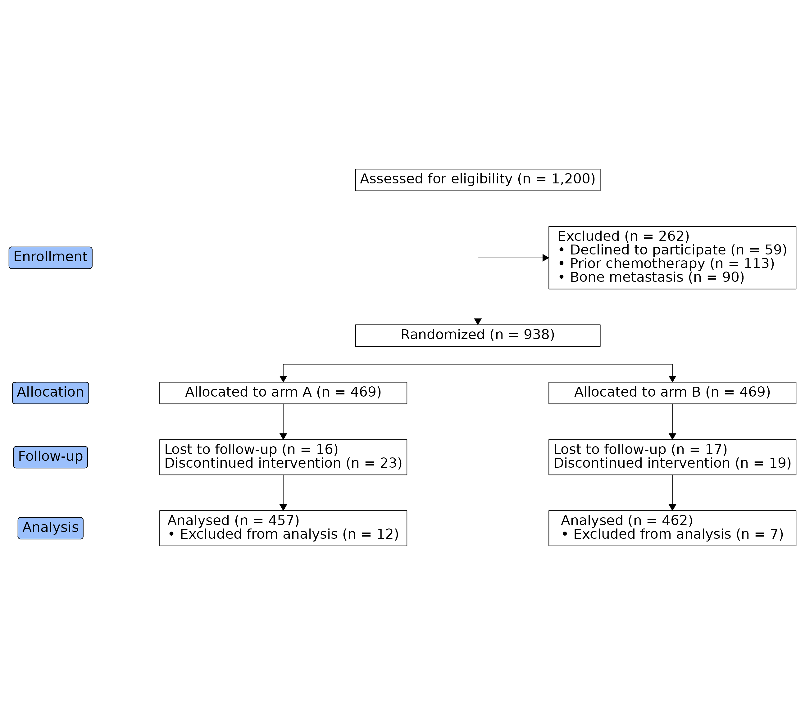

The CONSORT statement asks trial reports to show participant flow through four stages: Enrollment, Allocation, Follow-up, and Analysis. The README example stops at allocation; this article builds the full four-stage template.
Stage 1: count the cohorts
trial_data ships with ggconsort: 1,200 patients screened
for a randomized trial of Drug A versus Drug B, with exclusion,
follow-up, and analysis indicators. Every box in the diagram is a
cohort, so we define them all up front — including the per-arm follow-up
and analysis subsets.
library(ggconsort)
library(dplyr)
study_cohorts <-
trial_data |>
cohort_start("Assessed for eligibility") |>
cohort_define(
consented = .full |> filter(declined != 1),
chemonaive = consented |> filter(prior_chemo != 1),
randomized = chemonaive |> filter(bone_mets != 1),
excluded = anti_join(.full, randomized, by = "id"),
excluded_declined = anti_join(.full, consented, by = "id"),
excluded_chemo = anti_join(consented, chemonaive, by = "id"),
excluded_mets = anti_join(chemonaive, randomized, by = "id"),
arm_a = randomized |> filter(treatment == "Drug A"),
arm_b = randomized |> filter(treatment == "Drug B"),
arm_a_lost = arm_a |> filter(lost_to_followup == 1),
arm_a_discontinued = arm_a |> filter(discontinued == 1),
arm_b_lost = arm_b |> filter(lost_to_followup == 1),
arm_b_discontinued = arm_b |> filter(discontinued == 1),
arm_a_analyzed = arm_a |> filter(not_analyzed != 1),
arm_a_not_analyzed = arm_a |> filter(not_analyzed == 1),
arm_b_analyzed = arm_b |> filter(not_analyzed != 1),
arm_b_not_analyzed = arm_b |> filter(not_analyzed == 1)
) |>
cohort_label(
consented = "Consented",
chemonaive = "Chemotherapy naive",
randomized = "Randomized",
excluded = "Excluded",
excluded_declined = "Declined to participate",
excluded_chemo = "Prior chemotherapy",
excluded_mets = "Bone metastasis",
arm_a = "Allocated to arm A",
arm_b = "Allocated to arm B",
arm_a_lost = "Lost to follow-up",
arm_a_discontinued = "Discontinued intervention",
arm_b_lost = "Lost to follow-up",
arm_b_discontinued = "Discontinued intervention",
arm_a_analyzed = "Analysed",
arm_a_not_analyzed = "Excluded from analysis",
arm_b_analyzed = "Analysed",
arm_b_not_analyzed = "Excluded from analysis"
)Stage 2: lay out the diagram
A box named after a cohort labels itself with that cohort’s label and
count, so most boxes need nothing but a name and a grid position. Two
label helpers cover the rest: cohort_count_bullets() builds
header-plus-bullets boxes (the exclusion reasons), and
cohort_count_adorn() pasted with <br>
builds plain multi-line boxes (the follow-up boxes, which have no header
line in the CONSORT template).
The stage badges — Enrollment, Allocation, Follow-up, Analysis — go
in the left margin. That’s the consort_stage_add() default:
a "margin" column just left of the leftmost box.
study_consort <- study_cohorts |>
consort_box_add(
"full", row = 1, label = cohort_count_adorn(study_cohorts, .full)
) |>
consort_box_add(
"excluded", row = 2, col = "side",
label = cohort_count_bullets(
study_cohorts, excluded,
excluded_declined, excluded_chemo, excluded_mets
)
) |>
consort_box_add("randomized", row = 3) |>
consort_box_add("arm_a", row = 4, col = -1) |>
consort_box_add("arm_b", row = 4, col = 1) |>
consort_box_add(
"arm_a_followup", row = 5, col = -1,
label = paste(
cohort_count_adorn(study_cohorts, arm_a_lost, arm_a_discontinued),
collapse = "<br>"
)
) |>
consort_box_add(
"arm_b_followup", row = 5, col = 1,
label = paste(
cohort_count_adorn(study_cohorts, arm_b_lost, arm_b_discontinued),
collapse = "<br>"
)
) |>
consort_box_add(
"arm_a_analyzed", row = 6, col = -1,
label = cohort_count_bullets(
study_cohorts, arm_a_analyzed, arm_a_not_analyzed
)
) |>
consort_box_add(
"arm_b_analyzed", row = 6, col = 1,
label = cohort_count_bullets(
study_cohorts, arm_b_analyzed, arm_b_not_analyzed
)
) |>
consort_arrow_add(start = "full", end = "randomized") |>
consort_arrow_add(start = "full", end = "excluded") |>
consort_arrow_add(start = "randomized", end = c("arm_a", "arm_b")) |>
consort_arrow_add(start = "arm_a", end = "arm_a_followup") |>
consort_arrow_add(start = "arm_b", end = "arm_b_followup") |>
consort_arrow_add(start = "arm_a_followup", end = "arm_a_analyzed") |>
consort_arrow_add(start = "arm_b_followup", end = "arm_b_analyzed") |>
consort_stage_add("Enrollment", row = c(1, 3)) |>
consort_stage_add("Allocation", row = 4) |>
consort_stage_add("Follow-up", row = 5) |>
consort_stage_add("Analysis", row = 6)equal_columns = TRUE draws every box in a column at the
width of the column’s widest box, matching the uniform-width boxes of
the official template.
library(ggplot2)
study_consort |>
ggplot() +
geom_consort(equal_columns = TRUE) +
theme_consort()
At analysis time, the analysis populations are one
cohort_pull() away:
study_cohorts |>
cohort_pull(arm_a_analyzed)
#> # A tibble: 457 × 8
#> id declined prior_chemo bone_mets treatment lost_to_followup discontinued
#> <int> <int> <int> <int> <chr> <int> <int>
#> 1 65464 0 0 0 Drug A 0 0
#> 2 92586 0 0 0 Drug A 0 0
#> 3 89052 0 0 0 Drug A 0 0
#> 4 80724 0 0 0 Drug A 0 0
#> 5 48837 0 0 0 Drug A 0 0
#> 6 57285 0 0 0 Drug A 0 0
#> 7 65239 0 0 0 Drug A 0 1
#> 8 84443 0 0 0 Drug A 0 0
#> 9 27997 0 0 0 Drug A 0 0
#> 10 58752 0 0 0 Drug A 0 0
#> # ℹ 447 more rows
#> # ℹ 1 more variable: not_analyzed <int>